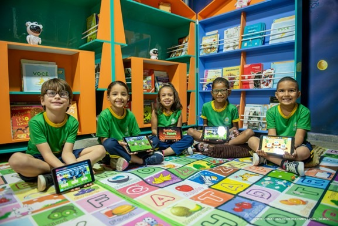
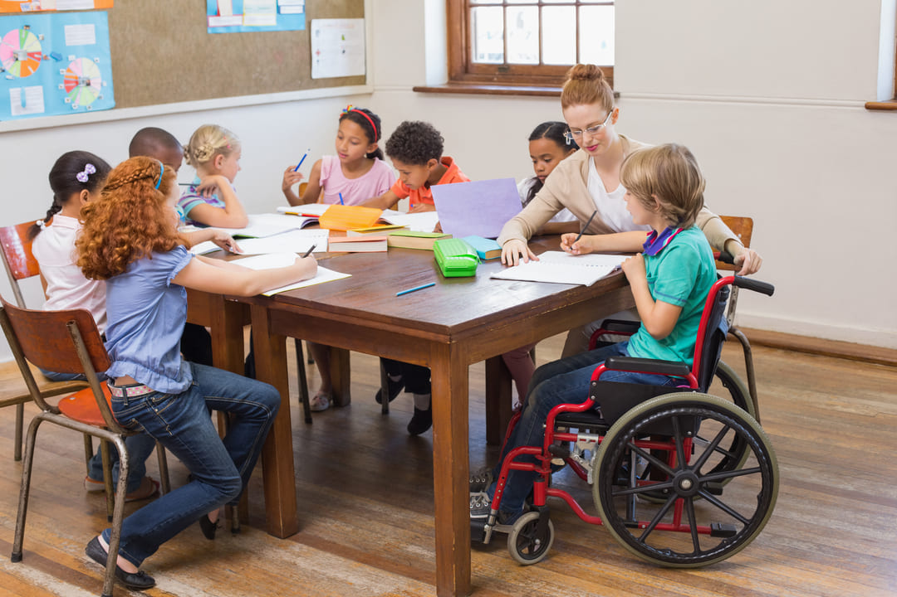

Instituto Caminhos do Amanhã
Instituto Caminhos do Amanhã
O Instituto Caminhos do Amanhã é uma organização sem fins lucrativos que atua na transformação social de crianças e adolescentes em situação de vulnerabilidade. Acreditamos que o futuro é construído a partir de oportunidades reais, educação de qualidade e inclusão para todos.
|  |  |
Nosso objetivo é criar um espaço acolhedor e inspirador, onde cada jovem possa desenvolver suas habilidades, descobrir novos talentos e acreditar no próprio potencial. Atuamos de forma inclusiva, promovendo educação, cidadania, tecnologia e o fortalecimento de vínculos sociais.
Promover o desenvolvimento integral de crianças e adolescentes por meio da educação, da tecnologia e da solidariedade, incentivando a autonomia e a construção de um futuro com mais igualdade e esperança.
Ser uma referência em transformação social e inclusão, contribuindo para formar uma geração preparada para os desafios do mundo moderno.
Baseamos nosso trabalho em cinco pilares fundamentais:
Endereço: Rua do Horizonte, 245 - Bairro Esperança - Cidade Nova, BR
E-mail: contato@institutocaminhos.org
Telefone: (00) 90000-0000
Redes sociais: @institutocaminhos